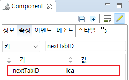
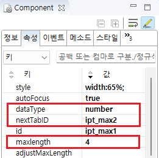

입력 또는 선택이 가능한 컴포넌트에 공통으로 제공되는 'nextTabId' 속성을 사용하여, 컴포넌트에서 'Tab' 키를 누르면 포커스가 이동될 컴포넌트를 설정한 예제입니다. 단, 'nextTabId' 속성이 설정된 컴포넌트가 'readOnly' 속성 또는 'disabled' 속성이 'true'로 설정된 경우에는 생략하고 다음 컴포넌트로 이동됩니다. 또한 'maxLength' 속성을 설정하면 입력한 자릿수 이상 입력했을 때 'nextTabId' 속성에 설정된 컴포넌트로 이동합니다.
'nextTabId' 속성을 사용해 Tab키를 눌렀을 때 포커스의 이동 순서 설정
'maxLength' 속성을 설정하여 자릿수를 채우면 다음 컴포넌트로 포커스 이동
예제 영역 'Tab 순차 이동'에서 테스트합니다.
1
각 컴포넌트의 값을 선택하거나 입력하고 'Tab'키를 입력합니다.
컴포넌트를 선택하고 "Tab"키를 눌렀을 때 번호 순서대로 이동하는 것을 확인합니다. 단, nextTabId가 설정된 컴포넌트가 readOnly나 disabled 속성이 true로 설정된 경우 생략하고 다음 컴포넌트로 이동합니다.
예제 영역 'maxLength를 활용한 Focus 이동'에서 테스트합니다.
maxLength 속성을 설정하면 입력한 자릿수 이상 입력했을 때 nextTabId로 설정된 컴포넌트로 이동합니다. 입력 컴포넌트에 숫자를 입력합니다. 각각 4, 6, 8자리가 입력된 이후에 입력을 하면 다음 컴퍼넌트로 포커스가 이동합니다.
1
STEP 1: Input의 왼쪽에 표시된 'maxLength'에 맞춰 숫자를 입력합니다.
입력 값 예시)1234, 123456, 12345678
2
STEP 2: 실행 결과를 확인합니다.
입력 값의 길이가 'maxLength'와 동일하면 포커스가 다음 Input으로 이동되는 것을 확인합니다.
1
컴포넌트를 선택하고 'nextTabId' 속성을 설정합니다.
nextTabId: 컴포넌트를 선택한 상태에서 Tab키를 눌렀을 때 포커스를 이동할 컴포넌트의 ID
Image 1.웹스퀘어 스튜디오의 Component View 예시 - InputBox (2)

Example 1.Source
<xf:input id="ipt1" nextTabID="ica"></xf:input>
dataType이 number일 때, maxLength 속성을 추가 설정해서 설정한 자릿수 이상 입력받으면 nextTabId로 설정된 컴포넌트로 포커스를 이동합니다.
nextTabId="이동할 컴포넌트 ID"
dataType="nubmer"
maxLenght="최대 길이"
Image 2.웹스퀘어 스튜디오의 Component View 예시

Example 2.Source
<xf:input maxlength="4" nextTabID="ipt_max2" dataType="number"> </xf:input>
nextTabID
maxlength